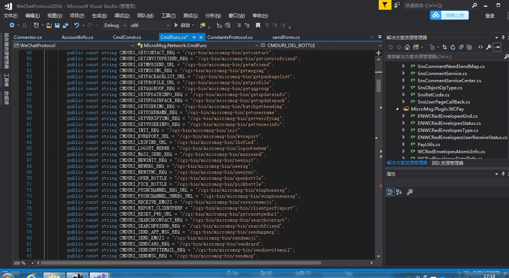
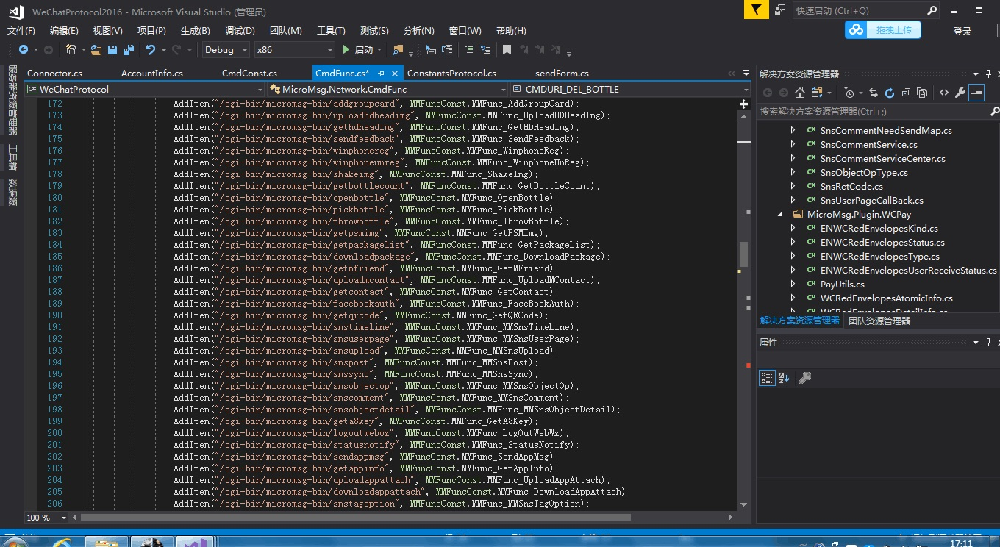
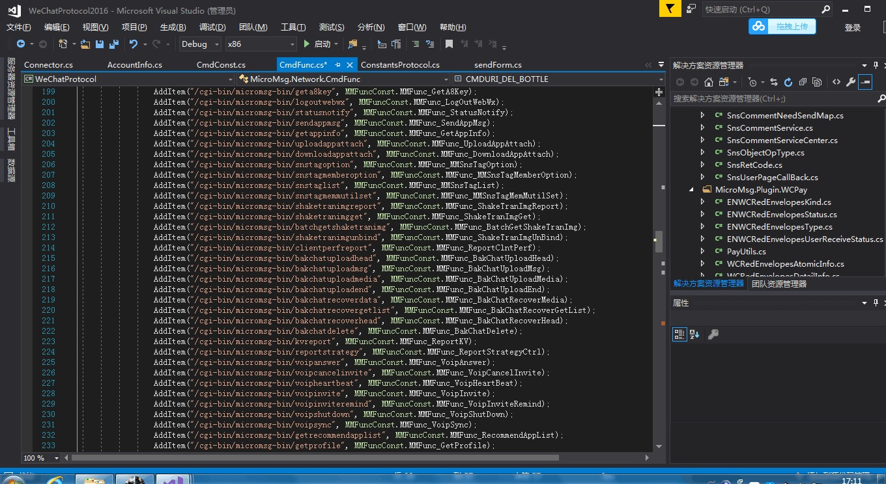
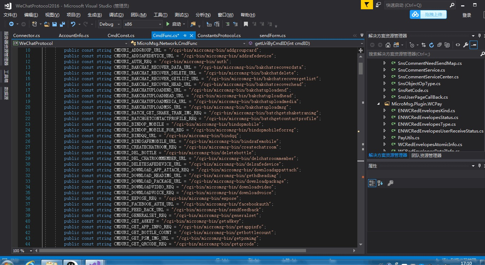
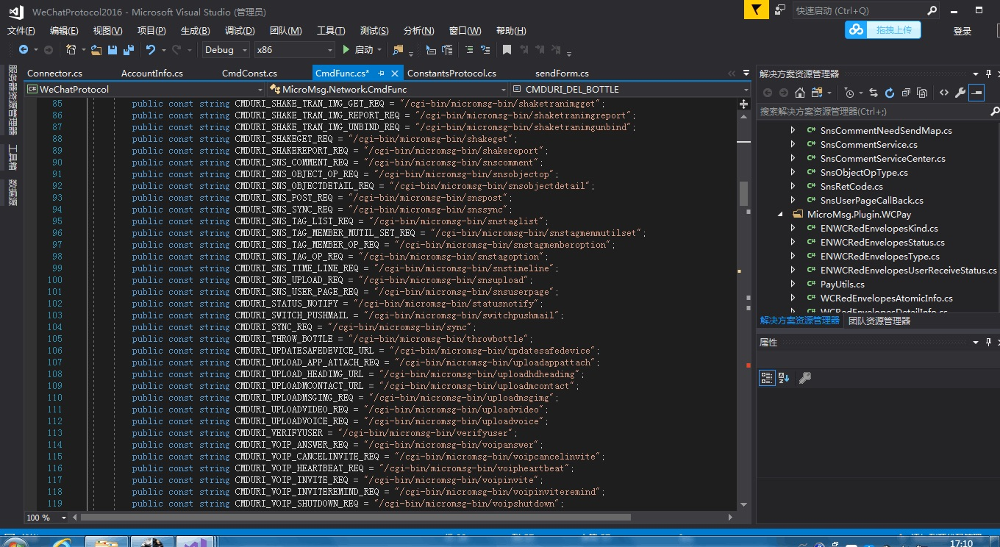
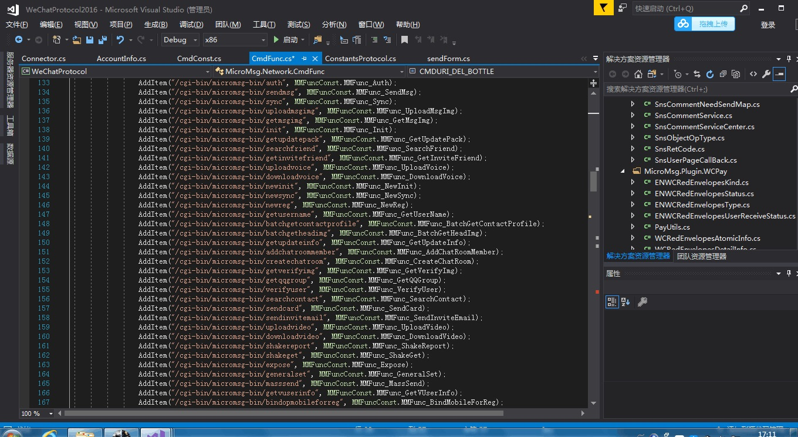

getLoginQRCode (获取登录二维码)
CheckLoginQRCode(检测扫码状态)
ManualAuth(扫码登录)
ManualAuth(62数据登录)
ManualAuth(账号密码登录)
newverifypasswd(验证密码)
GetQRCode(获取个人或群二维码)
F2FQrcode(取收款码)
SendNewMsg(发送文本消息)
NewInit(获取微信会话列表和信息)
NewSyncEcode(同步未读信息和好友)
SnsSync(同步朋友圈)
SnsUserPage(获取指定人朋友圈)
SnsTimeLine(取朋友圈首页)
GetSnsObjectOp(操作朋友圈)
LbsLBSFind(附近的人)
GetContactLabelList(获取标签分组)
InitContact(获取通讯录)
SearchContact(搜索微信号手机号QQ号)
UploadMsgImg(发送图片)
UploadVoice(发送音频)
TenPay(获取钱包信息)
TenPay(确认收款)
TenPay(生成自定义金额二维码)
VerifyUser(V1V2操作,关注公众号,添加好友)
OpLogDelUser(删除好友)
ShakeReport(摇一摇)
FavSync(同步收藏)
GetFavItem(获取单条收藏)
DelFavItem(删除收藏)
addFavItem(添加收藏)
logOut(退出登录)
AddContactLabel(添加标签)
ModifyContactLabelList(修改标签列表)
DelContactLabel(删除标签)
SnsUpload(上传朋友圈图片)
SendAppMsg(发送APP消息)
setChatRoomAnnouncement(发布群公告)
GetMsgImg(接收消息图片)
ExtDeviceLoginConfirmGet(扫码登录)
UploadMsgImgCDN(发送CDN图片)
GetContact(获取详细资料)
TenPay(创建转账)
GetA8Key(不想说)
CreateChatRoom(创建群)
AddChatRoomMember(添加群成员)
AddChatRoomMember(删除群成员)
GetChatroomMemberDetail(取群成员详细)
setChatRoomAnnouncement(修改群公告)
GetQRCode(获取群二维码或个人二维码)
NewInit(初始化第一次登录使用会返回微信列表和信息)
